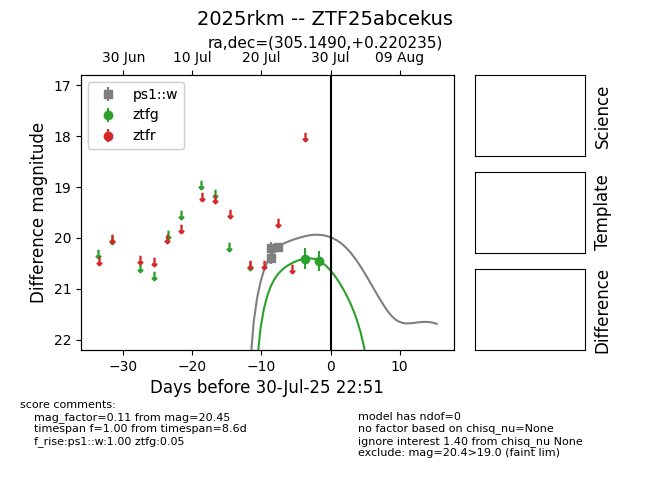

Target 2025rkm at 2025-07-30 22:51, see:
FINK: fink-portal.org/2025rkm
Lasair: lasair-ztf.lsst.ac.uk/objects/2025rkm
ALeRCE: alerce.online/object/2025rkm
YSE: ziggy.ucolick.org/yse/transient_detail/2025rkm
alt names
2025rkm (yse)
ZTF25abcekus (ztf,fink)
coordinates:
equatorial (ra, dec) = (305.1490,+0.22023)
galactic (l, b) = (43.7238,-19.62154)
photometry
last ps1::w=20.18, ztfg=20.45
3 ps1::w, 2 ztfg detections
